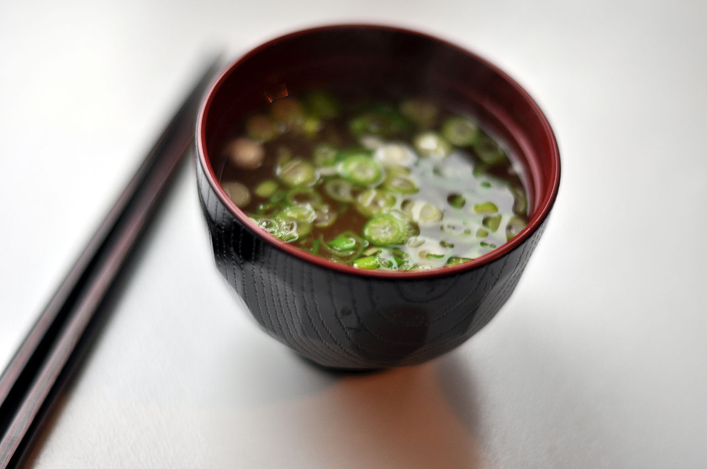

Miso Soup
A simple, yet tasty
Prep time
5 minutes
Cook time
15 minutes
Ingredients
- 4 cups water
- 1/2 cup chopped green chard or other sturdy green
- 1/2 cup chopped green onion
- 1/4 cup firm tofu, cubed
- 3-4 Tbsp white miso paste with or without bonito
- 1 sheet (1/4 cup) nori, cut into large rectangles , optional
Instructions
- Place water in a medium sauce pan and bring to a low simmer.
- Add nori and simmer for 5-7 minutes.
- In the meantime, place 3 Tbsp of miso into a small bowl, add a little hot water and whisk until smooth. Then add to the soup and stir. This will ensure it doesn’t clump.
- Add remaining ingredients to the pot and cook for another 5 minutes or so. Taste and add more miso or a pinch of sea salt if desired. Serve warm.
Recipe courtesy of Minimalist Baker of
http://minimalistbaker.com```